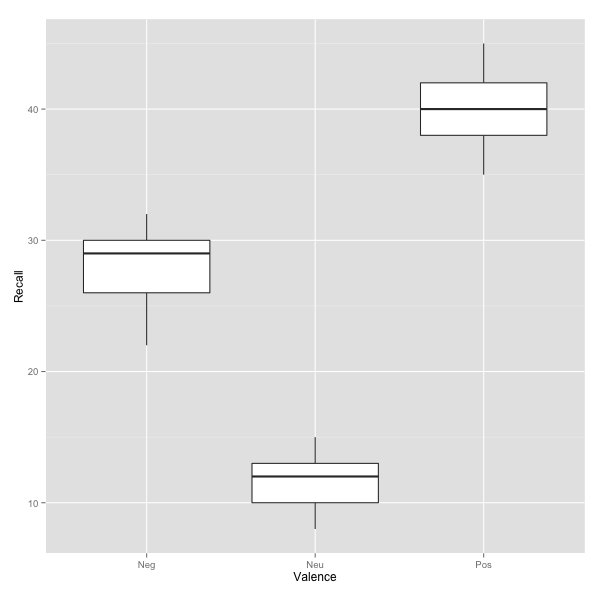
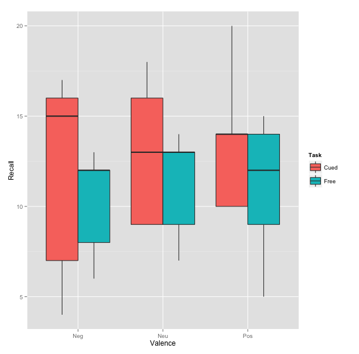

Repeated Measures in R
In this tutorial, I’ll cover how to analyze repeated-measures designs using 1) multilevel modeling using the lme package and 2) using Wilcox’s Robust Statistics package (see Wilcox, 2012). In a repeated-measures design, each participant provides data at multiple time points. Due to this, the assumptions about model error are different for variances which are presented between subjects (i.e., SSB than are variables presented within subjects (i.e., SSW. After the within-subject variability is partialled out, we model separately the effect of the experiment (i.e., SSE and the error not account for by the experiment (i.e., SSR).
When using this tutorial, there are a few things to keep in mind:
This is a draft. I’ll be updating this page with more graphs and explanations as time allows, informed by your feedback.
Multilevel models and Robust ANOVAs are just a few of the ways that repeated-measures designs can be analyzed. I’ll be presenting the multilevel approach using the
nlmepackage because assumptions about sphericity are different and are less of a concern under this approach (see Field et al., 2012, p. 576).
One way repeated measures
The first dataset we’ll be using can be obtained from the Personality Project:
1 2 | |
The main research question is does the valence of the word affect the rate at which items are recalled? First, let’s take a look at descriptive statistics of the dataset. We can sort them by the item valence using the describeBy() function in the psych package, which is available on CRAN.
1 2 3 4 5 | |
1 2 3 4 5 6 7 8 9 10 11 | |
Graphing the Effect
We can generate a quick boxplot to display the effect of Valence on Recall using the ggplot2 pacakge from CRAN.
1 2 | |

Multilevel Approach
A multilevel model is simply a regression that allows for the errors to be dependent on eachother (as our conditions of Valence were repeated within each participant). To run this type of analysis, we’ll use the nlme package from CRAN, although I’ve also had good luck with the lme4 package if you like experimenting.
1
| |
Similar to any approach to model testing, we want to see if our predictive, augmented model is better than a simple, 1 parameter mean model. Thus, we begin by specifying a baseline model in which the DV, Recall, is predicted by its overall mean. Second, we specify our model of interest, in which Recall is predicted instead by a the item Valence, which was repeated within subjects.
1 2 3 4 5 6 7 8 9 | |
One way of assessing the significance of our model is by comparing it from the baseline model. By comparing the models, we ask whether Valence as a predictor is significantly better than the simple mean model (i.e., a better fit). We can do this with the anova() function.
1
| |
1 2 3 | |
The output contains a few indicators of model fit. Generally with AIC (i.e., Akaike information criterion) and BIC (i.e., Bayesian information criterion), the lower the number the better the model, as it implies either a more parsimonious model, a better fit, or both. The likelihood ratio indicates that our valenceModel is a significnatly better fit for the data than our baseline model (p < 0.0001). Therefore, the item Valence had a significant impact on the measured Recall of the participant, Χ2(2) = 44.87, p < 0.0001.
We can obtain more specific details about the model using the summary() function:
1
| |
1 2 3 4 5 6 7 8 9 10 11 12 13 14 15 16 17 18 19 20 21 22 23 24 25 26 27 28 29 30 31 32 | |
Post-Hoc Tests
1 2 3 | |
1 2 3 4 5 6 7 8 9 10 11 12 13 14 15 16 17 | |
Thus, our post hoc analysis shows that participants’ rate of recall was significantly better for positively valenced items (M = 40) than neutral (M = 11.6, b = 28.40, p < .0001) and negatively valenced items (M = 27.8, b = 12.20, p < .0001). Similarly, neutral items were recalled at a significantly higher rate than negatively valenced items (b = -16.20, p < .0001).
Wilcox’s Robust ANOVA
As of 5/1/13, the WRS package must be compiled from source to be installed. You can obtain the source package from the R-Forge repo below:
1 2 3 | |
Unlike using lme() to analyze the data as a multilevel model, rmanova() requires that the data are in wide format. To adjust our table, we’ll use the reshape2 package from CRAN and cast the data into a wide format.
1 2 3 | |
For some reason, the rmanova() function doesn’t like dealing with factors variables, so we’ll remove the 5 Subjects. Finally, we’ll use rmanova(), which trims the data by 20% before estimating the effect.
1 2 3 | |
1 2 | |
1 2 3 4 5 6 7 8 9 10 11 12 13 14 15 16 17 | |
Similar to our findings from above, Valence had a significant influence on the item recall rate of the participant, F(1.26, 2.52) = 154.66, p < .01. However, we still want to conduct post-hoc analysis on the 20% trimmed means, which we’ll do using the rmmcp() function.
1
| |
1 2 3 4 5 6 7 8 9 10 11 12 13 14 15 16 17 18 19 20 21 | |
Post-hoc analysis confirms that Negatively valenced items are significantly different from both Neutral (Ψ̂ = 16, p < .01) and Positive items (Ψ̂ = -13, p < .05). Additionally, Neutral items are significantly different from positive items (Ψ̂ = -28.33, p < .01).
Two way repeated measures ( In Progress)
The second dataset we’ll be using can be obtained from the Personality Project:
1 2 | |
Graphing the Two-Way Interaction
1 2 | |

Multilevel Approach
1 2 3 4 5 6 7 8 9 10 11 12 13 14 | |
We again the significance of our models by comparing them from the baseline model. We can do this with the anova() function.
1
| |
1 2 3 4 5 | |
References
Field, A., Miles, J., & Field, Z. (2012). Discovering Statistics Using R. SAGE Publications.
Wilcox, R. R. (2012). Introduction to robust estimate and hypothesis testing.